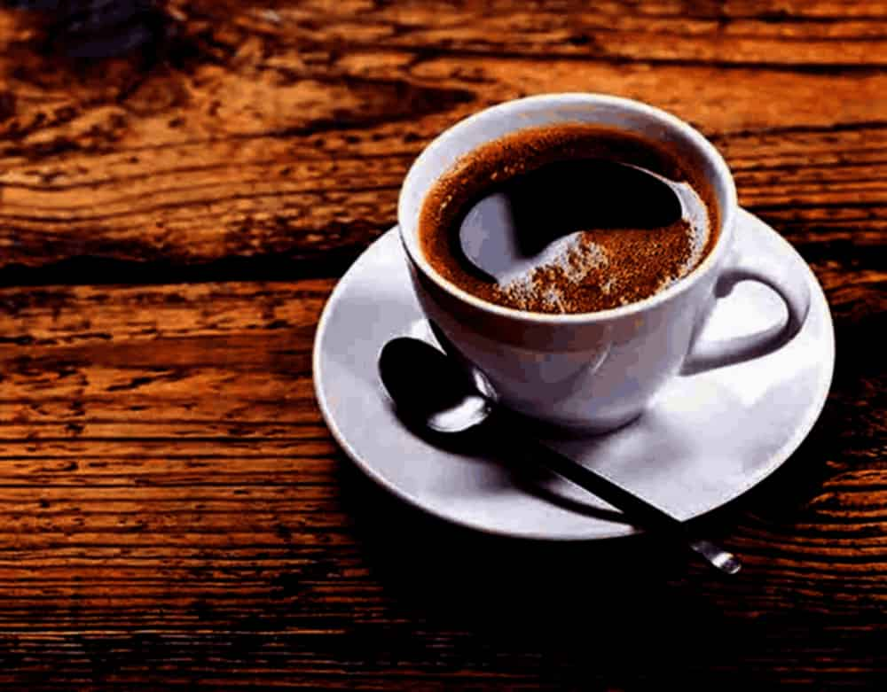
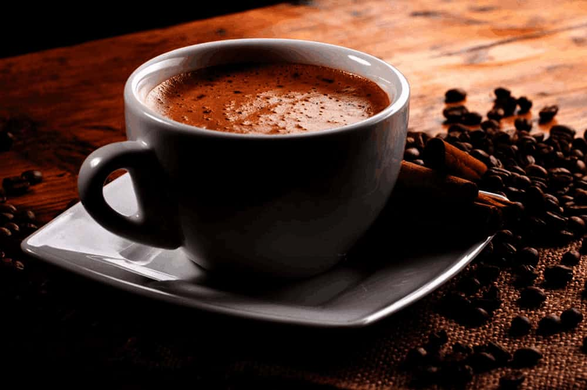

Black Coffee
From Wikipedia, 13 October 2020, at 19:57 (UTC).
Coffee is a brewed drink prepared from roasted coffee beans, the seeds of berries from certain Coffea species. When coffee berries turn from green to bright red in color – indicating ripeness – they are picked, processed, and dried. Dried coffee seeds (referred to as "beans") are roasted to varying degrees, depending on the desired flavor. Roasted beans are ground and then brewed with near-boiling water to produce the beverage known as coffee.
Read More...
Latte Coffee
From Wikipedia, 30 September 2020, at 00:23 (UTC).
Caffe latte (or simply latte) (/ˈlɑːteɪ/ or /ˈlæteɪ/) is a coffee drink made with espresso and steamed milk.
The word comes from the Italian caffè e latte [kafˌfɛ e lˈlatte], caffelatte [kaffeˈlatte] or caffellatte
[kaffelˈlatte], which means "coffee & milk". The word is also sometimes spelled latté or lattè in English with
different kinds of accent marks, which can be a hyperforeignism or a deliberate attempt to indicate that the
word is not pronounced according to the rules of English orthography.
Read More...
Cappuccino
From Wikipedia, 11 September 2020, at 18:13 (UTC).
A cappuccino (/ˌkæpʊˈtʃiːnoʊ/ (About this soundlisten); Italian pronunciation: [kapputˈtʃiːno]; Italian plural: cappuccini) is an espresso-based coffee drink that originated in Italy, and is traditionally prepared with steamed milk foam (microfoam). Variations of the drink involve the use of cream instead of milk, using non-dairy milks, and flavoring with cinnamon or chocolate powder. It is typically smaller in volume than a caffè latte, with a thicker layer of microfoam.
Read More...

Caffè Americano
From Wikipedia, 3 October 2020, at 09:50 (UTC).
Caffè Americano (also known as Americano or American; Italian pronunciation: [kafˈfɛ ameriˈkaːno]; Spanish:
café americano, literally American coffee) is a type of coffee drink prepared by diluting an espresso with hot
water, giving it a similar strength to, but different flavor from, traditionally brewed coffee. The strength of
an Americano varies with the number of shots of espresso and the amount of water added. The name is also spelled with varying capitalization and use of diacritics: e.g., café americano.
Read More...

Espresso
From Wikipedia, 11 September 2020, at 10:36 (UTC).
Espresso (/ɛˈsprɛsoʊ/ (About this soundlisten), Italian: [eˈsprɛsso]) is a coffee-making method of Italian
origin, in which a small amount of nearly boiling water is forced under pressure (expressed) through
finely-ground coffee beans. Espresso coffee can be made with a wide variety of coffee beans and roast levels.
Espresso is generally thicker than coffee brewed by other methods, has a higher concentration of suspended and
dissolved solids, and has crema on top (a foam with a creamy consistency).
Read More...